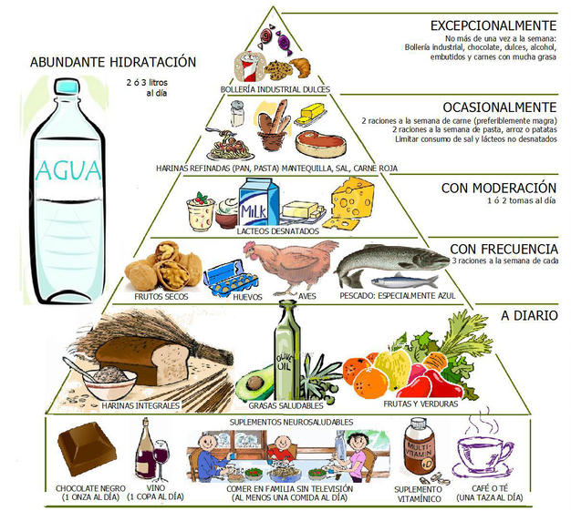

Piramide de alimentos

-
Consumo diario: hidratos
-
cereales
-
frutas y verduras
-
legumbres y tuberculos
- legumbres
- tuberculos
- otas raices
-
Consumo habitual:proteinas
- carnes y pescados
- carnes rojas
- aves y carnes blancas
- pescados
- mariscos
- huevos
- lacteos
-
Consumo moderado: otros
- grasas
- dulces